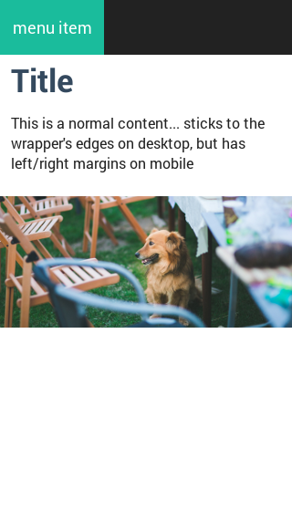

There were several aspects when creating the layout for this toolset:
There are 5 layouts defined out of the box, with these defaults:
| Name | Screen width (px) | Screen width (em) | Wrapper width | Refer to |
|---|---|---|---|---|
| xs | < 568px | < 35.5em | 100% | $screen-xs-max |
| sm | 568px - 768px | 35.5em - 48em | 100% | $screen-sm-min |
| md | 768px - 1024px | 48em - 64em | 100% | $screen-md-min |
| lg | 1024px - 1280px | 64em - 80em | 960px (60em) | $screen-lg-min |
| xl | > 1280px | > 80em | 1248px (78em) | $screen-xl-min |
All these can be changed of course depending on the project's needs. I even had a project where I completely had to get rid of the xl layout - not a problem.
Unless you want a completely fluid layout, there are two major classes you need to use for playing with variations: .wrapper and .content.
Wrapper is the class that keeps your elements in the middle of the site, that is the "meat's width". This will be 100% on mobile layouts and the appropriate fixed width on desktops.
Content is the class that helps you prevent items from "sticking" to edges of the wrapper or the screen. Content is usually a direct child of a wrapper div.
Example:
<body>
<nav><!-- Black stripe the fills the entire width-->
<div class="wrapper">
<a href="#">menu item</a><!-- it always sticks to the wrapper's edges -->
</div>
</nav>
<div class="wrapper">
<div class="content">
<h1>Title</h1>
<p>This is a normal content...</p><!-- sticks to the wrapper's edges on desktop, but has left/right margins on mobile-->
</div>
</div>
<div class="jumbotron"><!-- fills entire width (but that has nothing to do with .jumbotron class -->
<div class="wrapper">
<img src="acme.jpg"> <!-- image that fills the entire wrapper on desktop and the entire screen width on mobile -->
</div>
</div>
</div>
</body>
Result on desktop:
Result on mobile:
